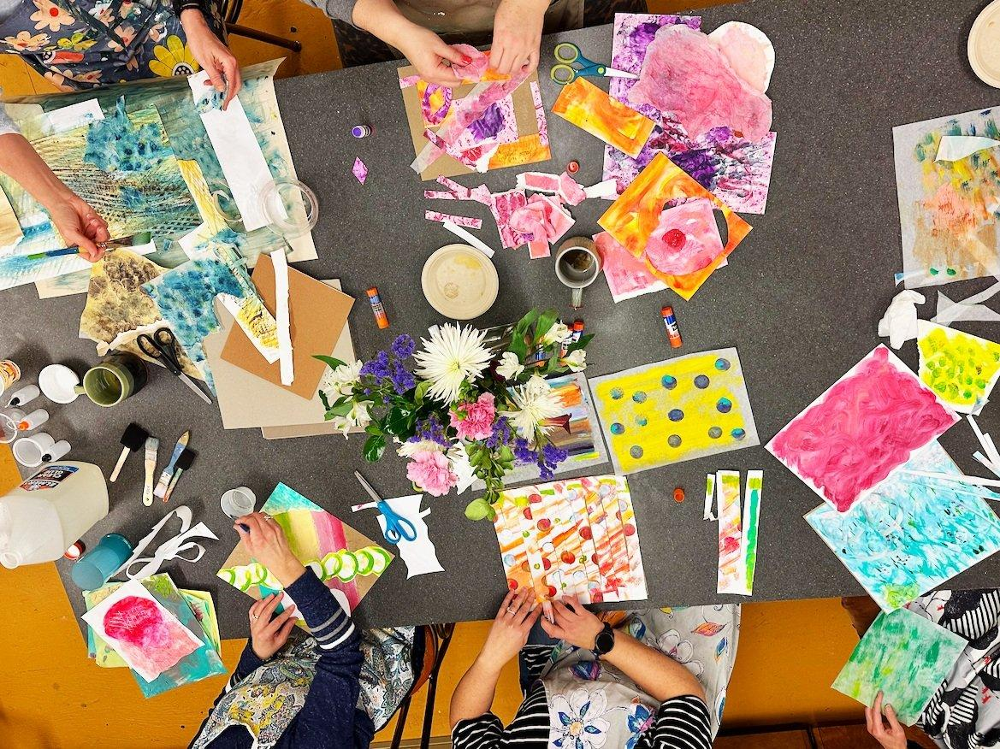
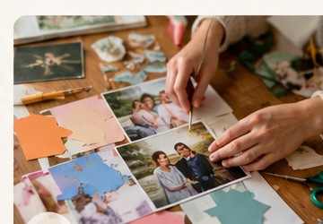
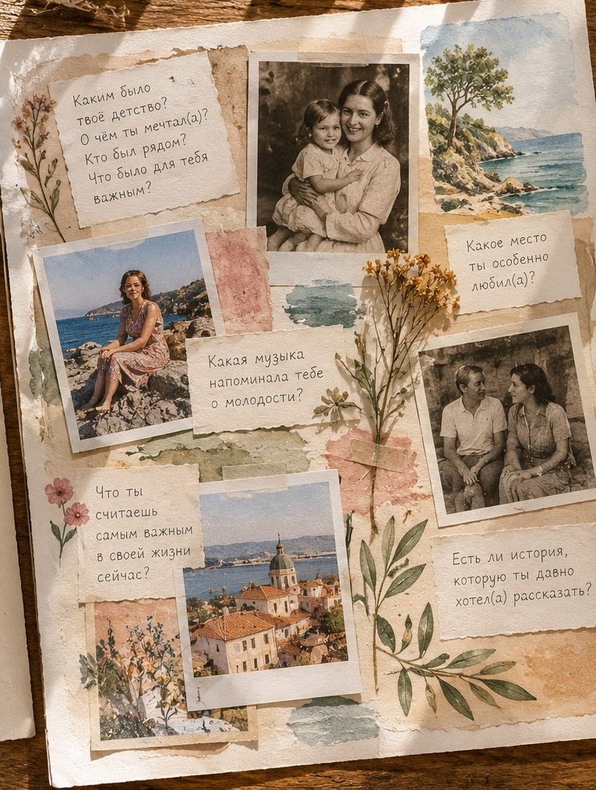
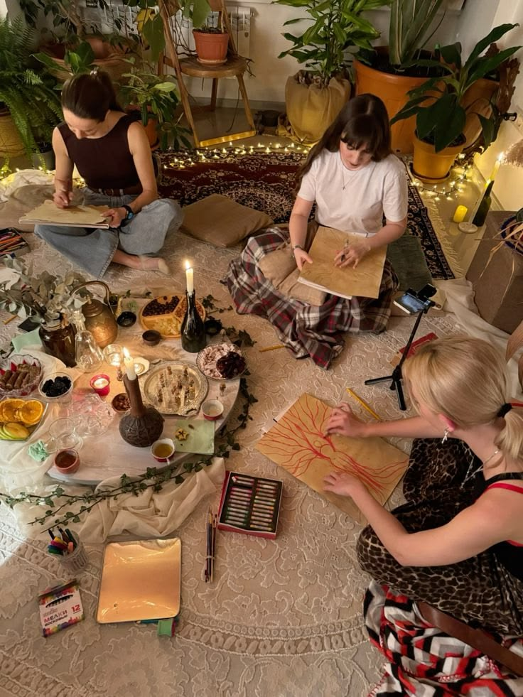
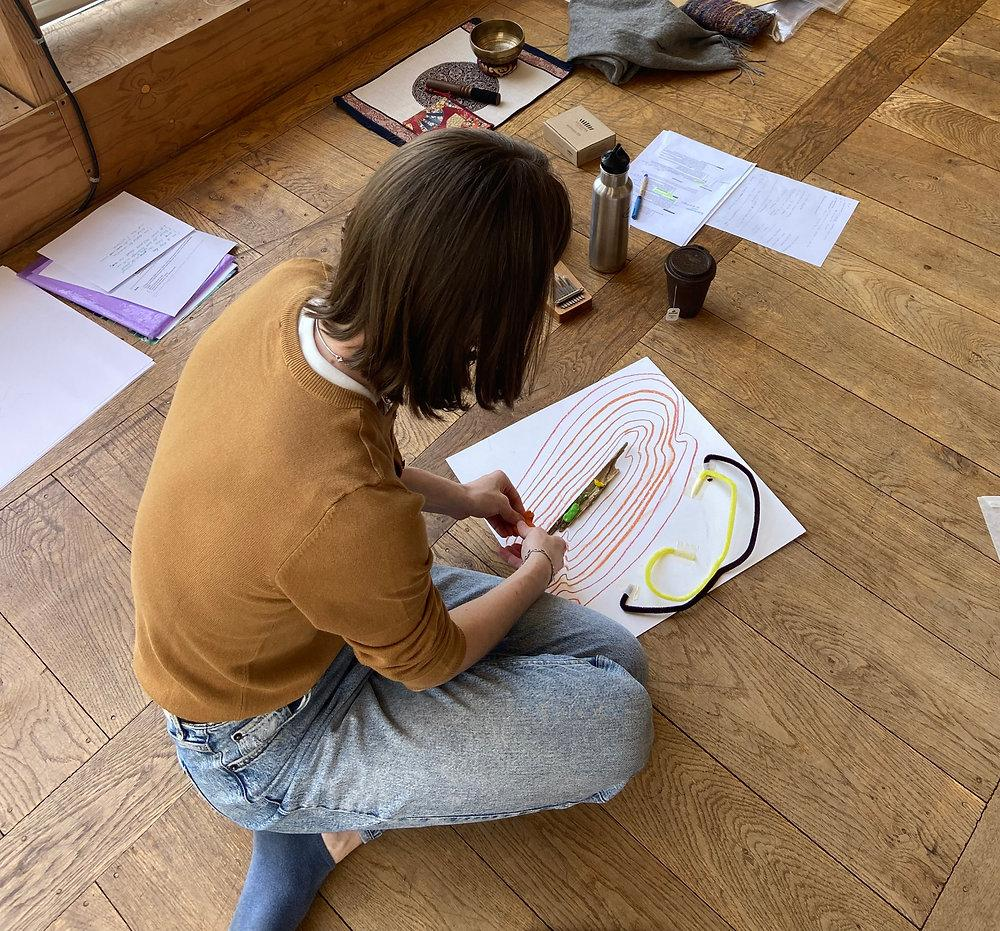
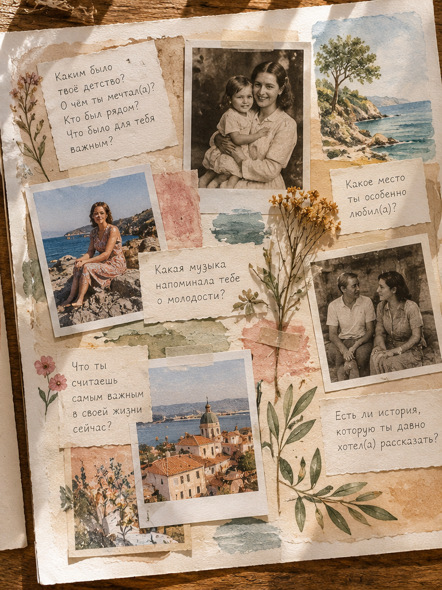
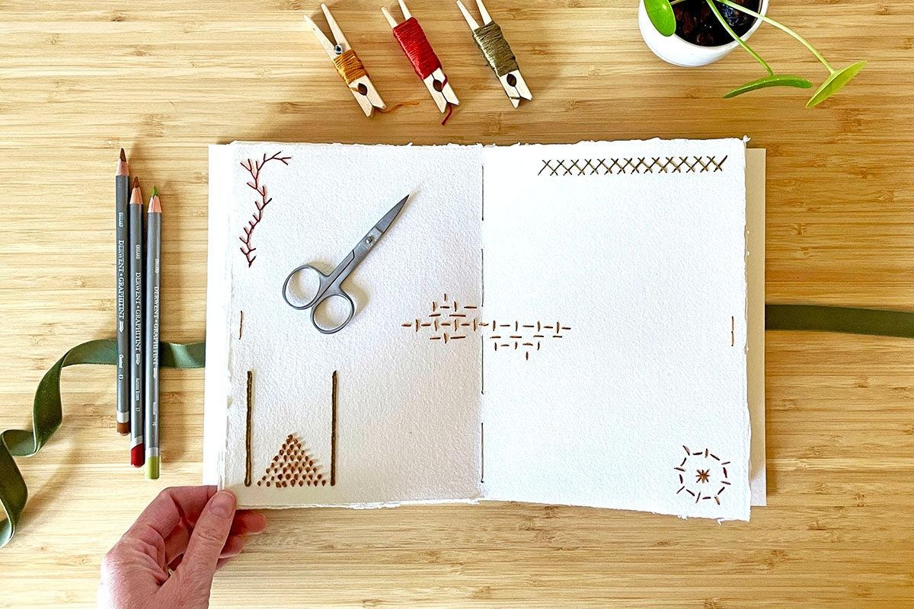
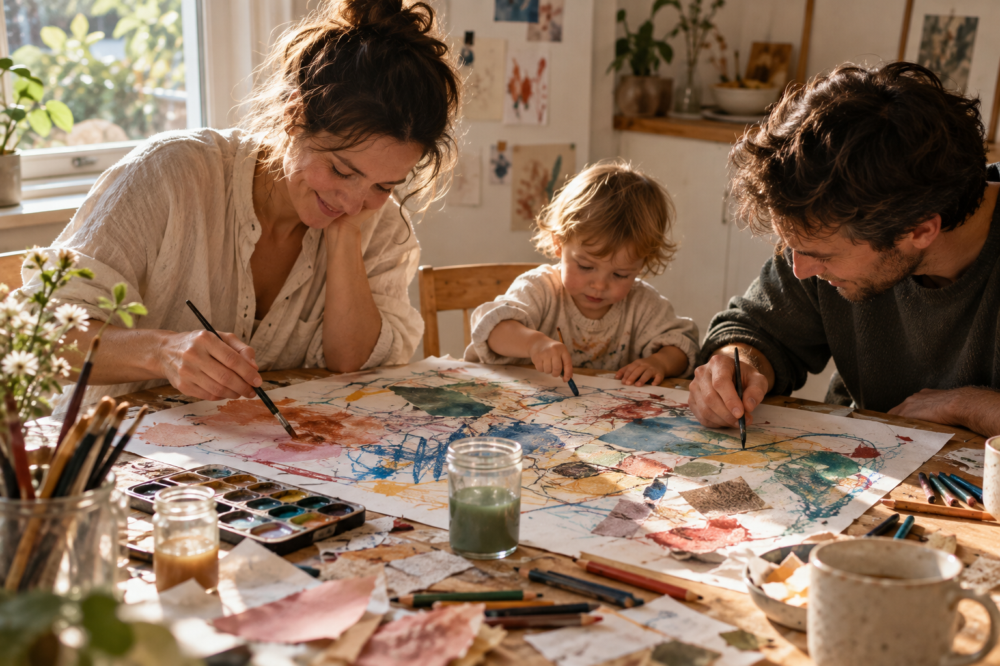

НЕ ТОЛЬКО РОДИТЕЛЬ
Как оставаться собой, будучи родителем?
Родительство меняет многое. Иногда среди забот, ожиданий и ответственности становится трудно услышать собственные желания. Здесь можно исследовать не только роль мамы или папы, но и себя — человека со своими чувствами, отношениями, интересами и мечтами.
Это не группа о том, как правильно воспитывать детей. Здесь в центре внимания — вы.
Узнать о записи
Ведущая: Анна Анопова — посмотреть профиль специалиста
Для кого эта группа
Для мам и пап детей любого возраста — от малышей до уже взрослых детей. Для тех, кто хочет найти пространство для себя, исследовать изменения в отношениях и снова заметить свои интересы. Необязательно приходить с готовым запросом.
Как мы будем работать
Через коллаж, рисунок, образы, художественные объекты и разговор. Художественные практики помогают исследовать конкретные темы родительства. Уметь рисовать не нужно; каждый сам решает, чем делиться с группой.
Программа восьми встреч
А где во всём этом я?
Коллаж «Я до родительства и я сегодня»: исследуем, что изменилось, что осталось и что хочется вернуть.

Хороший родитель, настоящий я
Работа с образами ожиданий и реальности. Как выглядят чужие представления о родительстве и мои собственные?

Чувства, о которых не принято говорить
Свободная живопись и разговор о разных, иногда противоречивых чувствах без оценки и необходимости оправдываться.

Моё тело, моё пространство
Работа с границами и личным пространством через бумагу, линии, цвет и объём.

Мы теперь другие
Парные образы и коллаж о том, как изменились отношения с партнёром, близкими и друзьями.

Что осталось от моих желаний?
Создаём карту интересов, мечтаний, профессии и творчества — всего, что важно помимо родительства.

Я не обязана справляться одна
Художественная карта поддержки: кого и о чём можно попросить, как разделить ответственность.

Я — это тоже я
Личная авторская книга или композиция о жизни, в которой есть место и детям, и себе.

Формат участия
Цикл из восьми встреч по два часа в небольшой группе. Формат и даты уточняются при предварительной записи.